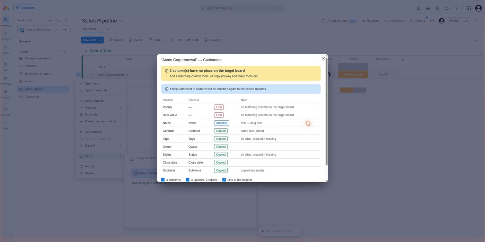
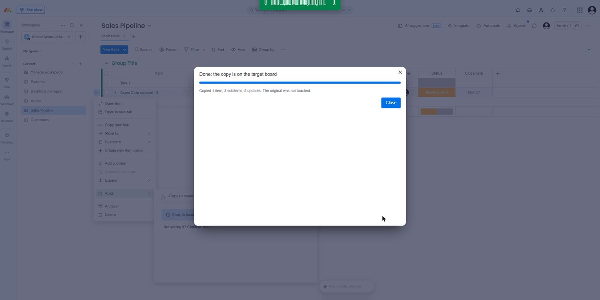
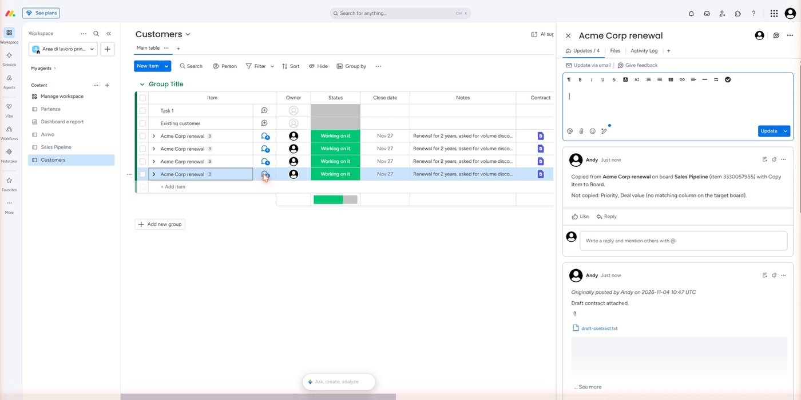

How to use Copy Item to Board
Copy an item to another board with its subitems, updates and files, and see what would be lost before you copy.
Before you start
- You need a monday.com account and access to both boards: you can see the item on the source board, and you can add items on the target board.
- Copying by hand works on every plan. Copying automatically (workflows) needs a plan that includes automations.
- If the target board has a subitems column, subitems are copied too. If not, the app tells you.
- You do not need to configure anything. The app has no settings page.
Install
- Open the app's page in the monday.com marketplace and choose Install.
- Review the permissions the app asks for (boards, updates and files) and confirm.
- Done. The command Copy to board… now appears in every item's menu, and the workflow action Copy item to board appears in the workflow builder.
Your first copy
- Open a board, click ⋯ next to an item, then Apps › Copy to board….
- Pick the target board (and a group if you want one). The last three destinations you used appear as shortcuts.
- Click Preview the copy. The table shows every column and where it goes.
- Choose what to bring along and click Copy item. A progress bar shows where it is; big items take up to a minute.

Nothing is written until you click Copy item. The original item is never changed, and the copy keeps its name (no "(copy)").

What you will see on the copy
Every copied update starts with "Originally posted by … on …", because monday.com writes the copy as the person who copies. The last update says where the item was copied from and lists anything that was not copied.

Copy automatically
- Create a workflow and choose a trigger, for example When status changes to something.
- Add an Action and search for Copy item to board.
- The source board and item come from the trigger. Choose the target board and a group.
- Publish the workflow.
The copy runs in the background. A repeated request for the same run never creates a second copy. If a copy fails or only part of it succeeds, the run shows an error that says what was created and what is missing.
What is not copied
- Columns with no match on the target board (the preview marks them Lost): add a column with the same title and type, or copy anyway.
- Columns apps cannot write: formula, mirror, lookup, auto number, item ID, creation log, last updated, button, dependency, time tracking, progress, vote, connect boards and doc columns (marked Skipped).
- Automations, integrations and views attached to the item or its board.
If something goes wrong
- "You don't have permission to add items to that board." Ask a board owner for edit access, or pick another board.
- "monday is busy right now." monday.com is limiting requests. Wait a minute and try again.
- "The item was created but N steps failed." The item exists on the target board but some subitems or updates are missing. Do not copy it again: fix what is missing by hand or delete the copy and start over.
- People with view-only access cannot add items, so the app cannot copy for them. That is a monday.com rule, not a setting of the app.
Help
Write to support@softyways.com with the board and the time of the copy, and we will find it. We aim to answer within two business days.